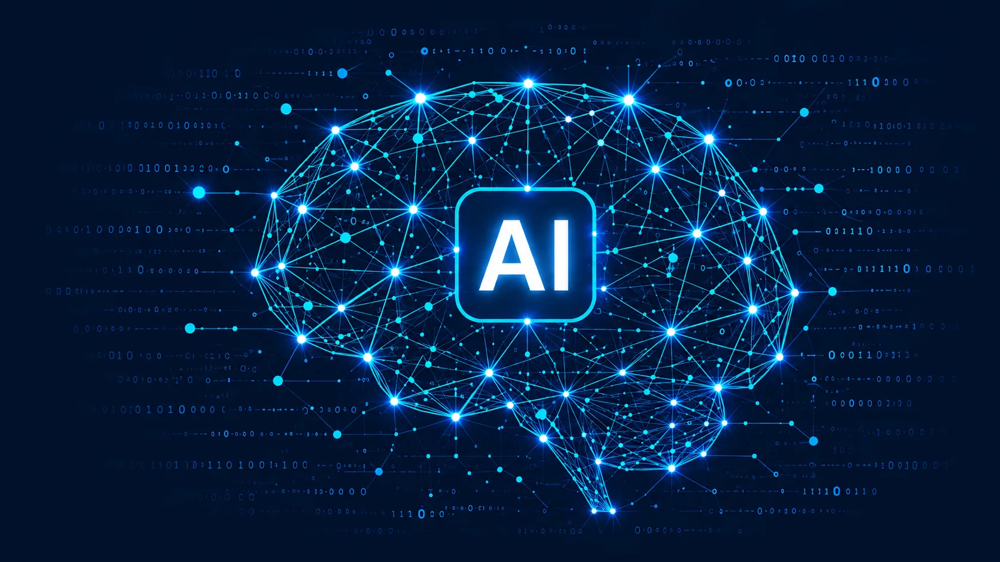

CRM
Zoho CRM & Bigin
Lead, pipeline, aktiviti, automasi, laporan dan penerimaan.
Pembelajaran praktikal untuk pelajar, profesional dan organisasi melalui bengkel, kerjasama universiti serta akses CSR.

Program boleh disampaikan sebagai bengkel ringkas, jejak pembelajaran berstruktur atau latihan korporat tersuai.
Lead, pipeline, aktiviti, automasi, laporan dan penerimaan.
Aliran kerja perakaunan, invois, receivable, payable dan laporan.
Item, pesanan, pembelian, pergerakan stok, fulfilment dan laporan.
Work order, dispatch, juruteknik, pelaksanaan servis dan mobile workflow.
Rekod pekerja, cuti, aliran kerja, pengambilan dan operasi HR.
Tiket, SLA, knowledge base, sokongan pelanggan dan analitik.
Sumber data, KPI, dashboard, visual report dan rutin semakan.
Aplikasi low-code, form, workflow, Deluge scripting dan extension.
Kesiapsiagaan AI bertanggungjawab, ejen, automasi dan kes penggunaan praktikal.
Penyediaan data, analisis, visualisasi, pemikiran model dan tafsiran perniagaan.
Pengenalan kepada Zoho, AI, data, automasi dan kerjaya digital.
Sokongan terpilih untuk pelajar berpotensi dan profesional awal kerjaya.
Kuliah jemputan, cabaran kes, internship dan projek transformasi gunaan.
Jejak perunding fungsi, penganalisis perniagaan, data, automasi dan sokongan.
Sesi berasaskan peranan untuk jualan, kewangan, servis, inventori, HR dan pengurusan.
Pembelajaran jarak jauh dengan rakaman, handout, latihan dan Q&A.
Sesi ringkas berfokus hasil untuk pemimpin dan pembuat keputusan.
Pelan pembelajaran untuk laluan fungsi, produk dan penyesuaian teknikal.
EastBridge is building a disciplined research, product and intellectual-property capability around real customer problems.
Structured discovery, architecture, prototypes, pilots and reusable product capabilities.
Teroka R&D →Source-code governance, product ownership, trademarks, software rights and commercial evidence.
Teroka Inovasi Vietnam →Efficient architecture, proportionate AI, lifecycle discipline and transparent measurement.
Teroka teknologi hijau →Laluan pembelajaran yang menghubungkan pemikiran kelestarian dengan keputusan kejuruteraan untuk perisian, awan, data dan AI.
Nilai manfaat, risiko, sumber dan impak sebelum menskala use case AI.
Pilih model sepadan dan optimumkan arahan, konteks, retrieval dan inferens.
Prestasi, algoritma, data, awan bersaiz tepat dan pemerhatian operasi.
Fahami kitar hayat data, model, infrastruktur dan pilihan penambahbaikan.
Kongsikan proses, sistem dan keutamaan semasa anda. Kami akan mencadangkan langkah seterusnya yang terkawal, skop yang jelas dan laluan penyampaian yang realistik.